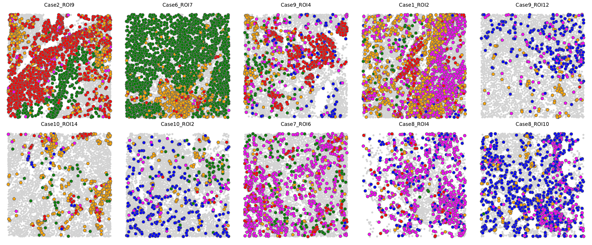

visualize.EA.cluster.fig2e
from smfishHmrf.HMRFInstance import HMRFInstance
from smfishHmrf.DatasetMatrix import DatasetMatrix, DatasetMatrixSingleField, DatasetMatrixMultiField
from smfishHmrf.spatial import rank_transform_matrix, calc_silhouette_per_gene
import random
import sys
import math
import numpy as np
import scipy
import scipy.stats
from scipy.stats import zscore
from scipy.spatial.distance import euclidean, squareform, pdist
import smfishHmrf.reader as reader
import pandas as pd
import matplotlib as mpl
import matplotlib.pyplot as plt
import seaborn as sns
from matplotlib.lines import Line2D
from smfishHmrf.bias_correction import calc_bias_moving, do_pca, plot_pca
from scipy.cluster.vq import kmeans2
def norm_centroid(cent):
scale_factor = 2000/4
cent[:,0] = (cent[:,0] - float(1000)) / float(500)
cent[:,1] = (cent[:,1] - float(-1000)) / float(500)
return cent
def read_centroid(n):
f = open(n)
f.readline()
num_cell = 0
for l in f:
l = l.rstrip("\n")
num_cell+=1
f.close()
Xcen = np.empty((num_cell, 2), dtype="float32")
field = np.empty((num_cell), dtype="int32")
f = open(n)
f.readline()
ind = 0
for l in f:
l = l.rstrip("\n")
ll = l.split(",")
Xcen[ind,:] = [float(ll[-2]), float(ll[-1])]
field[ind] = int(ll[0])
ind+=1
f.close()
return Xcen, field
def read_position(n):
f = open(n)
f.readline()
Xcen = {}
order = []
for l in f:
l = l.rstrip("\n")
ll = l.split("\t")
x,y = float(ll[1]), float(ll[2])
t_id = ll[0]
Xcen[t_id] = (x,y)
order.append(t_id)
f.close()
cen = np.empty((len(order), 2), dtype="float32")
for i in range(len(order)):
cen[i,:] = Xcen[order[i]]
field = []
for i in range(len(order)):
t_id = order[i]
t_field = "_".join(t_id.split("_")[:2])
tt = t_field
field.append(tt)
field = np.array(field)
return cen, field
def read_cluster(n, cluster_label):
f = open(cluster_label)
m = []
for l in f:
l = l.rstrip("\n")
m.append(l)
f.close()
map_label = {}
for im,v in enumerate(m):
map_label[im+1] = v
f = open(n)
clust = []
for l in f:
l = l.rstrip("\n")
clust.append(map_label[int(l)])
f.close()
return np.array(clust)
'''
def read_metadata(n):
f = open(n)
h = f.readline().rstrip("\n").split("\t")
meta = {}
for l in f:
l = l.rstrip("\n")
ll = l.split("\t")
t_zip = dict(zip(h, ll[1:]))
t_id = t_zip["cell_ID"]
meta.setdefault("cell_ID",[])
meta["cell_ID"].append(t_id)
for i in ["0", "0.5", "1", "1.5", "2", "2.5", "3", "3.5", "4"]:
for j in ["10", "20", "30"]:
t_key = "hmrf_k.%s_b.%s" % (j, i)
tt = int(t_zip[t_key])
meta.setdefault(t_key, [])
meta[t_key].append(tt)
meta.setdefault("leiden_clus", [])
meta["leiden_clus"].append(int(t_zip["leiden_clus"]))
f.close()
for k in meta:
meta[k] = np.array(meta[k])
return meta
'''
def convert(n, vmin, vmax):
return (n - vmin) / (vmax - vmin + 1)
if __name__=="__main__":
Xcen, field = read_position("Xcen_v0_TNBC_race_reprocessed.txt")
#Xcen, field = read_position("Xcen.txt")
#meta = read_metadata("frequency.kmeans")
clust = read_cluster("frequency.kmeans.k20iter10000.1", "cell.cell.interact/uniq.clusters")
#clust = read_cluster("frequency.leiden")
#max_clust = np.max(clust)
print(clust)
uniq_field = np.unique(field)
print(uniq_field)
print(len(uniq_field))
#sys.exit(0)
dot_size = 50
ncol = 5
nrow = int(10 / ncol)
size_factor = 5
if 10%ncol>0:
nrow+=1
print(nrow, ncol)
f, axn = plt.subplots(nrow, ncol, figsize=(ncol * size_factor, nrow * size_factor))
plt.subplots_adjust(hspace=0.05, wspace=0.05)
ct = 0
#print(uniq_field)
#sys.exit(0)
#AA patients (selective)
# patient18, patient18, patient23 patient23 patient37 patient4 patient4 patient40 patient41
uniq_field = ["Case2_ROI9", "Case6_ROI7", "Case9_ROI4", "Case1_ROI2", "Case9_ROI12", "Case10_ROI14", "Case10_ROI2", "Case7_ROI6", \
"Case8_ROI4", "Case8_ROI10"]
#uniq_field = ["Case2_ROI10", "Case2_ROI9", "Case6_ROI7", "Case6_ROI8", "Case9_ROI4", "Case1_ROI1", "Case1_ROI2", "Case9_ROI12", "Case9_ROI13"]
#AA patients (all)
'''
uniq_field = ["Case1_ROI5", "Case1_ROI6", "Case2_ROI1", "Case2_ROI2", "Case2_ROI3", "Case2_ROI4", "Case2_ROI5", \
"Case2_ROI6", "Case2_ROI7", "Case2_ROI8", "Case2_ROI10", "Case2_ROI9", "Case1_ROI7", "Case1_ROI8", "Case6_ROI1", \
"Case6_ROI2", "Case6_ROI3", "Case6_ROI4", "Case6_ROI7", "Case6_ROI8", "Case1_ROI10", "Case1_ROI9", "Case9_ROI1", \
"Case9_ROI2", "Case9_ROI3", "Case9_ROI4", "Case9_ROI5", "Case9_ROI6", "Case9_ROI8", "Case9_ROI9", "Case1_ROI1", \
"Case1_ROI2", "Case9_ROI11", "Case9_ROI12", "Case9_ROI13", "Case9_ROI14", "Case6_ROI5", "Case6_ROI6", "Case1_ROI11", \
"Case9_ROI15", "Case9_ROI7", "Case9_ROI10", "Case1_ROI12", "Case1_ROI13", "Case1_ROI14", "Case1_ROI3", "Case1_ROI4"]
'''
#EA patients (all)
'''
uniq_field = ["Case10_ROI10", "Case10_ROI11", "Case10_ROI12", "Case10_ROI13", "Case10_ROI14", "Case10_ROI1", \
"Case10_ROI2", "Case10_ROI3", "Case10_ROI4", "Case10_ROI5", "Case10_ROI6", "Case10_ROI7", "Case10_ROI8", "Case10_ROI9", \
"Case4_ROI1", "Case4_ROI2", "Case4_ROI3" "Case4_ROI4", "Case4_ROI5", "Case4_ROI6", "Case7_ROI10", "Case7_ROI11", "Case7_ROI12", \
"Case7_ROI13", "Case7_ROI1", "Case7_ROI2" "Case7_ROI3", "Case7_ROI4", "Case7_ROI5", "Case7_ROI6", "Case7_ROI7", "Case7_ROI8", \
"Case7_ROI9", "Case8_ROI10", "Case8_ROI11" "Case8_ROI12", "Case8_ROI13", "Case8_ROI14", "Case8_ROI15" "Case8_ROI16", "Case8_ROI17",\
"Case8_ROI18", "Case8_ROI1", "Case8_ROI2" "Case8_ROI3", "Case8_ROI4", "Case8_ROI5", "Case8_ROI6", "Case8_ROI7", "Case8_ROI8", "Case8_ROI9"]
'''
print(len(uniq_field))
#uniq_field = ["Case10_ROI8", "Case10_ROI9", "Case7_ROI12", "Case7_ROI13", "Case10_ROI10", "Case10_ROI11", "Case7_ROI10", "Case8_ROI6", "Case10_ROI13", "Case10_ROI14"]
'''
uniq_field = ['Case1_Bone_ROI1', 'Case1_Bone_ROI2', 'Case1_Bone_ROI3', 'Case1_Bone_ROI4',
'Case1_Bone_ROI5', 'Case1_Breast_ROI1', 'Case1_Breast_ROI2',
'Case1_Breast_ROI3', 'Case1_Breast_ROI4', 'Case1_Breast_ROI5',
'Case2_Bone_ROI1', 'Case2_Bone_ROI2', 'Case2_Bone_ROI3', 'Case2_Bone_ROI4',
'Case2_Bone_ROI5', 'Case2_Breast_ROI1', 'Case2_Breast_ROI2']
'''
c1 = "18 Ki67 KIFC1"
c2 = "20 CD31 CD45RA"
c3 = "10 CD68"
c4 = "9 GranzymeB CD152 HIF1a"
c5 = "3 CD11c pHH3"
c6 = "5 CD11c FOXP3 pHH3 ECadherin"
c7 = "7 CD152 CD8a"
for fd in uniq_field:
#m = np.where(field==fd)[0]
#m = np.where((field==fd) & ((clust==1) | (clust==8) | (clust==7) | (clust==2) | (clust==5) | (clust==13) | (clust==14) | (clust==6) | (clust==15)))[0]
#m = np.where((field==fd) & ((clust==13) | (clust==14) | (clust==15)))[0]
#m = np.where((field==fd) & (clust==c1))[0]
m2 = np.where((field==fd) & (clust==c2))[0]
m3 = np.where((field==fd) & (clust==c3))[0]
m4 = np.where((field==fd) & (clust==c4))[0]
m5 = np.where((field==fd) & (clust==c5))[0]
#m6 = np.where((field==fd) & (clust==c6))[0]
m7 = np.where((field==fd) & (clust==c7))[0]
#m8 = np.where((field==fd) & ((clust!=c1) & (clust!=c2) & (clust!=c3) & (clust!=c4) & (clust!=c5) & (clust!=c6) & (clust!=7)))[0]
m8 = np.where((field==fd) & ((clust!=c2) & (clust!=c3) & (clust!=c4) & (clust!=c5) & (clust!=7)))[0]
#cl = meta["leiden_clus"]
#cl = meta["hmrf_k.20_b.1"]
tot_size = m2.shape[0] + m3.shape[0] + m4.shape[0] + m5.shape[0] + m7.shape[0]
tot_Xcen = np.empty((tot_size, 2), dtype="float32")
tot_Xcen[0:m2.shape[0],:] = Xcen[m2,:]
xt = m2.shape[0]
tot_Xcen[xt:xt+m3.shape[0],:] = Xcen[m3,:]
xt += m3.shape[0]
tot_Xcen[xt:xt+m4.shape[0],:] = Xcen[m4,:]
xt += m4.shape[0]
tot_Xcen[xt:xt+m5.shape[0],:] = Xcen[m5,:]
xt += m5.shape[0]
tot_Xcen[xt:xt+m7.shape[0],:] = Xcen[m7,:]
tot_color = []
tot_color.extend(["red" for i in range(m2.shape[0])])
tot_color.extend(["blue" for i in range(m3.shape[0])])
tot_color.extend(["orange" for i in range(m4.shape[0])])
tot_color.extend(["green" for i in range(m5.shape[0])])
tot_color.extend(["magenta" for i in range(m7.shape[0])])
tot_color = np.array(tot_color)
ind = [i for i in range(tot_size)]
random.shuffle(ind)
#colors = np.empty(m.shape, dtype="int32")
#for c in range(colors.shape[0]):
# colors[c] = 1
axn.flat[ct].scatter(Xcen[m8,0], Xcen[m8,1], s=dot_size*0.3, c="lightgray", edgecolors=None) #other
'''
#axn.flat[ct].scatter(Xcen[m,0], Xcen[m,1], s=dot_size, c="black", edgecolors="dimgray", cmap="RdYlBu", vmin=1, vmax=1) #ki67 kifc1
axn.flat[ct].scatter(Xcen[m2,0], Xcen[m2,1], s=dot_size, c="red", edgecolors="dimgray", cmap="RdYlBu", vmin=1, vmax=1) #cd31 cd45ra
axn.flat[ct].scatter(Xcen[m3,0], Xcen[m3,1], s=dot_size, c="blue", edgecolors="dimgray", cmap="RdYlBu", vmin=1, vmax=1) #cd68
axn.flat[ct].scatter(Xcen[m4,0], Xcen[m4,1], s=dot_size, c="orange", edgecolors="dimgray", cmap="RdYlBu", vmin=1, vmax=1) #gzmb cd152 hif1a
axn.flat[ct].scatter(Xcen[m5,0], Xcen[m5,1], s=dot_size, c="green", edgecolors="dimgray", cmap="RdYlBu", vmin=1, vmax=1) #cd11c phh3
#axn.flat[ct].scatter(Xcen[m6,0], Xcen[m6,1], s=dot_size, c="pink", edgecolors="dimgray", cmap="RdYlBu", vmin=1, vmax=1) #cd11c foxp3 ecad
axn.flat[ct].scatter(Xcen[m7,0], Xcen[m7,1], s=dot_size, c="magenta", edgecolors="dimgray", cmap="RdYlBu", vmin=1, vmax=1) #cd152 cd8a
'''
axn.flat[ct].scatter(tot_Xcen[ind,0], tot_Xcen[ind,1], s=dot_size, c=tot_color[ind], edgecolors="dimgray")
axn.flat[ct].title.set_text(fd)
#axn.flat[ct].title.set_visible(False)
axn.flat[ct].set_facecolor("white")
axn.flat[ct].axis("off")
ct+=1
#f.savefig("visual.clusters.EAclusters.AApatient.pdf",bbox_inches='tight')
f.savefig("visual.clusters.EAclusters.fig2e.pdf",bbox_inches='tight')
#plt.show()
sys.exit(0)
Running Command
python3 visualize.EA.cluster.fig2e.pyResults
